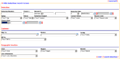

Blacksmith Applications, www.blacksmithapps.com
Deductions home > Search Deductions (simple or advanced)
The search deductions page allows you to search very specifically for deductions that meet particular criteria, using either a simple search, or the advanced search.
Using the simple search, you can search by Deduction number, Deduction date, by dollar amount (using equal, less than or greater than), and by Distributor (Ship to) or Broker. Use the [reset form] link to clear any search criteria from your previous search.
Use the [Show Deduction/Hide Deduction Search] link to toggle between displaying the advanced vs simple search form.
If you click the [search deductions] link with no search criteria entered on the search deductions form, the full listing of deductions is displayed.
Fields you can search on in the advanced search include:
Deduction #
Check #
Amount (greater than, less than, between (range))
Deduction Date (greater than, less than, between (range))
Aging
Status
Deduction Analyst
Current Action
Reason Code
Closure Date (greater than, less than, between (range))
Customer Ship To, Broker, Family, Bill To
Geographic Zone, Region, Market, Line of Business
Use the [reset form] link to clear any search criteria from your previous search, and click the [scorecard link] to return to the deductions scorecard page.
Click to see a full-size image of the Advanced Deductions Search page:
